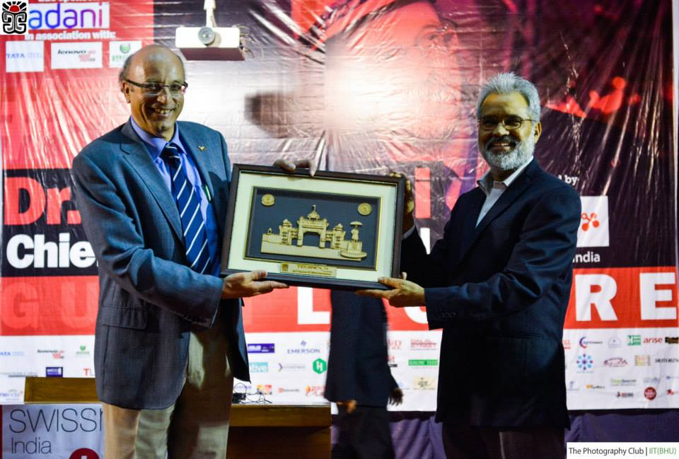

Зарождение языка C++
От «C with Classes» до мирового стандарта системного программирования.
Бьярне Страуструп и Bell Labs

В 1979 году датский учёный Бьярне Страуструп приступил к разработке нового языка в исследовательском центре Bell Labs. Ему нужен был инструмент для моделирования распределённых систем: язык должен был сочетать низкоуровневую эффективность C с возможностями абстракции, характерными для Simula.
Первоначально проект назывался «C with Classes» — «C с классами». В него вошли классы, наследование, инкапсуляция, inline-функции и проверка типов. Компилятор переводил код в обычный C, что ускоряло перенос на разные платформы.
В 1983 году язык переименовали в C++. Оператор инкремента символизировал эволюцию языка C. Уже в 1985 году вышла первая коммерческая реализация «The C++ Programming Language», а сообщество программистов начало активно применять C++ в промышленности.
Ключевая идея Страуструпа — «ноль накладных расходов»: вы не платите за возможности, которыми не пользуетесь. Этот принцип определил философию C++ на десятилетия вперёд.
C with Classes
«C with Classes» добавил к процедурному C объектно-ориентированные конструкции без потери совместимости с существующим кодом. Программисты могли постепенно внедрять новые абстракции в большие проекты — это было важно для телекоммуникационных и системных задач Bell Labs.